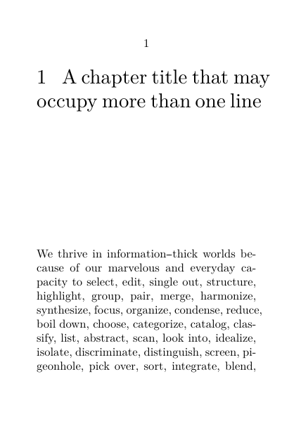

| TODO: This page is under construction as part of the renewal of the "Document structure and headlines" documentation area. Several historical examples still require validation against current ConTeXt LMTX. (See: To-Do List) |
Validation status
The current examples presented on this page have been tested with ConTeXt LMTX 2026.07.29.
Recipes explicitly identified as historical or implementation-sensitive have been preserved for reference but should not be assumed to represent the recommended current interface.
HOW-TO — Creating specialised chapter pages
This page explains how to turn a chapter opening into a specialised page design while keeping the chapter itself part of the normal document structure.
For ordinary headline formatting, see Headlines formatting.
For the underlying distinction between structure and presentation, see Understanding document structure and section heads.
Contents
- 1 1. When a chapter opening becomes a page design
- 2 2. Start with a custom chapter command
- 3 3. Control the page break before a chapter
- 4 4. Combine a custom head with graphical decoration
- 5 5. Use structural user data for chapter-specific designs
- 6 6. Select graphical material from the structural chapter number
- 7 7. Decorative text effects belong to the renderer
- 8 8. Historical and advanced recipes: validation status
- 9 9. What remains on Headlines formatting
- 10 10. Related pages
- 11 11. Attribution and validation status
1. When a chapter opening becomes a page design
Ordinary chapter heads can usually be configured with
\setuphead.
A specialised chapter page is useful when the opening must also control such things as:
- the complete arrangement of the number and title;
- a fixed vertical area for the chapter head;
- a graphic or image;
- a page background;
- MetaPost decoration;
- chapter-specific structural metadata;
- the state of headers and footers;
- the page break before the chapter.
The important principle is that the visual design should remain attached to an ordinary structural chapter.
STRUCTURAL CHAPTER
│
├── number
├── title
├── list entry
├── bookmark
├── marking
└── reference target
│
▼
PRESENTATION LAYER
│
┌──────┼───────────┐
│ │ │
command graphic background
│ │ │
└──────┴───────────┘
│
▼
chapter opening page
Keep the chapter structural
Do not replace a chapter with an unrelated page construction merely because the chapter opening has an unusual design.
A specialised chapter opening should still behave as a chapter in the table of contents, references, bookmarks, markings, and structural numbering.
2. Start with a custom chapter command
The command= interface of \setuphead can hand
the visible number and title to a user-defined command.
The general pattern is:
\define[2]\MyChapter {% % #1 = number % #2 = title } \setuphead [chapter] [command=\MyChapter]
This is the same basic mechanism used for simpler custom heads.
Use it when the number and title must be recomposed rather than merely restyled.
2.1. Reserve a fixed vertical area for the chapter head
For example, the body text can always begin below a fixed-height chapter area even when the title itself occupies several lines:
-
\setuppapersize[A7] \setupbodyfont[8pt] \define[2]\MyChapterCommand {\vbox to 4cm\bgroup #1\hskip.75em #2 \vss \egroup} \setuphead [chapter] [header=nomarking, command=\MyChapterCommand] \starttext \startchapter [title={A chapter title that may occupy more than one line}] \input tufte \stopchapter \stoptext
-

The head occupies a four-centimetre vertical box. The following text therefore begins at a predictable position.
Validated with current LMTX
This fixed-height chapter-head pattern was tested with ConTeXt LMTX 2026.07.29.
A custom command= renderer receives the chapter number and
title while preserving ordinary structural chapter numbering.
A fixed-height \vbox also keeps the beginning of the body
text at the same vertical position for both short and multiline chapter
titles.
3. Control the page break before a chapter
In doublesided documents, chapters are often required to begin on a right-hand page.
A named page-break rule can be associated with the chapter head:
\definepagebreak [mychapterpagebreak] [yes,header,right] \setuphead [chapter] [page=mychapterpagebreak]
The chapter remains an ordinary structural chapter; the
page= setting controls how the new chapter page is reached.
In a doublesided document, reaching the next right-hand chapter page can require an intervening verso page.
A named page-break rule can make that inserted page completely blank:
\definepagebreak [mychapterpagebreak] [yes,header,footer,right] \setuphead [chapter] [page=mychapterpagebreak]
In the tested case, a first chapter ending on page 1 was followed by:
page 1 Chapter 1 page 2 completely blank page 3 Chapter 2
The inserted page contained no running header, footer, or page number.
Validated with current LMTX
This page-break pattern was tested with ConTeXt LMTX 2026.07.29 (MWE 24b).
With doublesided page numbering, the rule inserted a completely blank verso when necessary and placed the following chapter on the next right-hand page.
Ordinary chapter numbering was preserved.
3.2. Section blocks can add their own page transitions
When frontmatter, bodymatter,
appendices, or backmatter are used, the section
blocks themselves can introduce page transitions.
The former Garden recipe disabled those transitions with:
\setupsectionblock [frontpart] [page=] \setupsectionblock [bodypart] [page=] \setupsectionblock [backpart] [page=] \setupsectionblock [appendix] [page=]
before assigning a custom page-break rule to the chapter head.
Requires separate validation
The chapter page-break rule itself has been validated, but its interaction with explicit section-block page settings has not yet been included in the current MWE series.
Test the complete frontmatter/bodymatter/appendix/backmatter sequence before relying on the historical combination unchanged.
4. Combine a custom head with graphical decoration
A chapter renderer can combine the structural number and title with frames, overlays, or MetaPost graphics.
The general pattern remains:
chapter data
│
▼
command=\MyChapter
│
├── number
├── title
└── graphical material
│
▼
chapter opening
One earlier Garden example combined a custom chapter renderer with a MetaPost overlay.
Its essential structure was:
\startuseMPgraphic{HeaderDeco} % MetaPost decoration \stopuseMPgraphic \defineoverlay [HeaderDeco] [\uniqueMPgraphic{HeaderDeco}] \define[2]\MyChapter {\framedtext [background={foreground,HeaderDeco}, frame=off, align=middle] {\headtext{chapter}\space #1 \blank[small] #2}} \setuphead [chapter] [command=\MyChapter]
This separates the two jobs cleanly:
\setuphead → connect the design to the structural chapter \MyChapter → compose the visible head HeaderDeco → provide the graphical decoration
5. Use structural user data for chapter-specific designs
A chapter can carry additional structural data in its second optional argument.
For example:
\startchapter [title={First chapter}] [mycolor=one] ... \stopchapter
The value belongs to the structural chapter record.
A specialised page design can retrieve it with:
\namedstructureuservariable{chapter}{mycolor}
This makes it possible to associate different presentation data with different chapters without defining a separate chapter command for every case.
Conceptually:
chapter
│
├── title = First chapter
├── number = 1
└── mycolor = one
│
▼
chapter-page renderer
│
▼
use colour scheme "one"
Validated with current LMTX
Structural user data attached to a chapter were tested with ConTeXt LMTX 2026.07.29 (MWE 26).
Values stored in the second optional argument of
\startchapter were successfully retrieved with
\namedstructureuservariable{chapter}{...} both inside a
custom chapter-head renderer and later in the chapter body.
The chapter structure and ordinary numbering were preserved.
5.1. Drive a page background from chapter userdata
Structural user data can also be used to control the appearance of a page.
In this example, each chapter stores a value in mycolor.
The page-background graphic retrieves that value with
\namedstructureuservariable and uses it to select the
corresponding colour.
-
\setuppapersize[A6] \setupbodyfont[8pt] \definecolor [chaptercolor:one] [r=.85,g=.90,b=.95] \startuseMPgraphic{chapterbackground} StartPage ; fill Page withcolor \MPcolor{chaptercolor:\namedstructureuservariable{chapter}{mycolor}} ; StopPage ; \stopuseMPgraphic \defineoverlay [chapterbackground] [\useMPgraphic{chapterbackground}] \setupbackgrounds [page] [background=chapterbackground] \starttext \startchapter [title={First chapter}] [mycolor=one] This chapter-opening page uses a background selected from structural userdata. \stopchapter \stoptext
The important point is that the presentation choice remains attached to the structural chapter:
chapter
│
└── mycolor=one
│
▼
\namedstructureuservariable
│
▼
chaptercolor:one
│
▼
page background
This is preferable to deriving the design from the visible chapter title or maintaining a separate mapping between chapter titles and page designs.
The pattern above applies a presentation value derived from the current chapter userdata.
When the special background should appear only on the opening page of a chapter, the background renderer can also keep track of whether that chapter opening has already been processed.
5.2. Restrict the special background to the chapter-opening page
A chapter-specific background does not necessarily have to remain active throughout the whole chapter.
MetaPost can keep a small amount of state and apply the special background only the first time it encounters a given structural chapter number.
First define an ordinary page background and the chapter-specific colours:
\definecolor [normalpage] [s=.95] \definecolor [chaptercolor:one] [r=.85,g=.90,b=.95] \definecolor [chaptercolor:two] [r=.95,g=.90,b=.80]
A MetaPost variable can record which chapter openings have already been processed:
\startMPinclusions numeric ChapterOpeningDone[] ; \stopMPinclusions
Define the ordinary page background:
\startuseMPgraphic{normalbackground} StartPage ; fill Page withcolor \MPcolor{normalpage} ; StopPage ; \stopuseMPgraphic
The chapter-opening graphic tests the current structural chapter number:
\startuseMPgraphic{chapterbackground} if unknown ChapterOpeningDone.\namedheadnumber{chapter} : StartPage ; fill Page withcolor \MPcolor{chaptercolor:\namedstructureuservariable{chapter}{mycolor}} ; StopPage ; ChapterOpeningDone.\namedheadnumber{chapter} := 1 ; fi ; \stopuseMPgraphic
Install both overlays:
\defineoverlay [normalbackground] [\useMPgraphic{normalbackground}] \defineoverlay [chapterbackground] [\useMPgraphic{chapterbackground}] \setupbackgrounds [page] [background={normalbackground,chapterbackground}]
The chapter itself supplies the presentation value:
\startchapter [title={First chapter}] [mycolor=one] ... \stopchapter
On the first page of the chapter,
ChapterOpeningDone.<number> is still unknown, so the
chapter-specific background is drawn and the corresponding state is set.
On subsequent pages of the same chapter, that state is already known and the chapter-specific overlay draws nothing. The ordinary background therefore remains visible.
The sequence is consequently:
Chapter 1, opening page → chapter-specific background Chapter 1, following page → ordinary background Chapter 2, opening page → chapter-specific background Chapter 2, following page → ordinary background
This pattern keeps three concerns separate:
- the chapter remains an ordinary structural chapter;
- structural userdata selects the chapter-specific presentation;
- MetaPost state limits that presentation to the opening page.
6. Select graphical material from the structural chapter number
A custom head command can replace the ordinary visible number and title with graphical material while the chapter itself remains structurally unchanged.
For example, graphical resources can be associated with chapter numbers:
chapter:1 chapter:2 chapter:3 ...
The current structural chapter number is available through:
\namedheadnumber{chapter}
It can therefore be used directly when selecting the graphical resource.
A tested pattern is:
\define[2]\MyChapterCommand {\useMPgraphic{chapter:\namedheadnumber{chapter}}} \setuphead [chapter] [command=\MyChapterCommand]
With graphical definitions such as:
\startuseMPgraphic{chapter:1} % graphic for Chapter 1 \stopuseMPgraphic \startuseMPgraphic{chapter:2} % graphic for Chapter 2 \stopuseMPgraphic
the structural number selects the corresponding graphical representation:
structural chapter 1
│
└── \namedheadnumber{chapter} → 1
│
▼
chapter:1
structural chapter 2
│
└── \namedheadnumber{chapter} → 2
│
▼
chapter:2
Validated with current LMTX
This pattern was tested with ConTeXt LMTX 2026.07.29 (MWE 25).
A custom command= renderer successfully used
\namedheadnumber{chapter} to select different MetaPost
graphics for Chapters 1 and 2.
The ordinary visible chapter heads were replaced by the graphics, while the chapters retained their structural numbers and titles.
6.1. Historical MkII and MkIV variants
The former documentation contained older solutions for replacing chapter heads with images.
The MkII version used deeptextcommand,
deepnumbercommand, and \currentheadnumber.
A later MkIV variant used \namedheadnumber{chapter}.
Those historical implementations are useful documentation history, but they are no longer required for the ordinary current-LMTX pattern shown above.
The current tested mechanism keeps the distinction simple:
chapter structure
│
├── number
├── title
├── ToC entry
└── references
│
▼
command= renderer
│
▼
graphical head
7. Decorative text effects belong to the renderer
An earlier example produced an enlarged shadow behind the chapter title by drawing the title twice with different fonts and colours.
Its structural connection was simply:
\setuphead [chapter] [textcommand=\MyChapterText]
with the visual effect contained in:
\def\MyChapterText#1 {\rlap{...#1}...#1}
The reusable principle is still useful:
STRUCTURE │ ▼ textcommand= │ ▼ visual transformation of title text
The particular 2004 font definitions and colour recipe are historical, however, and should not be copied as a current font-setup example.
8. Historical and advanced recipes: validation status
The former Collections of tips and tricks page accumulated techniques from several generations of ConTeXt.
Some of these techniques remain useful with current LMTX, while others come from MkII or early MkIV implementations and still require revalidation.
The table below therefore distinguishes validated current mechanisms from historical or implementation-sensitive recipes.
| Recipe | Original character | Current documentation status |
|---|---|---|
| Enlarged shadow behind a chapter title | solution attributed to Hans, 2004 | historical example; preserve the technique, but modernise and test the font setup before reuse |
| Replace number and title with an image | MkII and MkIV variants, 2005–2010 | historical variants should remain separate; test the current command= form
|
| MetaPost-decorated chapter head | advanced custom renderer | useful pattern; compile under current LMTX before marking as validated |
| Chapter-specific opening-page background | structural userdata + MetaPost page state | current mechanism validated; the special background can be restricted to the first page of each chapter |
| Fixed vertical position for following text | custom command= with a fixed-height box
|
validated with LMTX 2026.07.29 |
| Rule matching the last line of a multiline head | internal box and line-width techniques | historical / implementation-sensitive; requires current-LMTX validation |
8.1. The last-line-width recipe is implementation-sensitive
The former page contained elaborate code for measuring the last line of a multiline head and drawing a rule of the corresponding width.
It also mentioned the shorter low-level form:
\optimizedisplayspacingtrue \setlastlinewidth \global\advance\lastlinewidth-\hangindent \par \blackrule[width=\lastlinewidth,height=1pt]
The original comment explicitly described part of this mechanism as a core macro.
Historical / implementation-sensitive
Do not teach this recipe as an ordinary current interface until it has been checked against current LMTX.
The design requirement is useful; the historical implementation may not be the interface that should be recommended today.
9. What remains on Headlines formatting
This page is for chapter-opening designs that become page compositions.
Ordinary head formatting remains on: Headlines formatting.
That includes:
- font and colour changes;
- alignment and hyphenation;
- spacing;
- number placement;
- number or complete headline in the margin;
- ordinary page-breaking behaviour;
- simple number/title recomposition;
- labels such as Chapter or Section ;
- hiding the printed head while retaining structural data.
A useful boundary is:
ordinary head formatting
│
└── Headlines formatting
head becomes a page composition
│
└── Create specialised chapter pages
10. Related pages
- Document structure and headlines
- Headlines formatting
- Section numbering
- Table of contents
- Understanding document structure and section heads
- Create specialised tables of contents
For related page-oriented mechanisms, see:
10.1. Command reference
- \setuphead
- \definepagebreak
- \setupsectionblock
- \defineoverlay
- \setupbackgrounds
- \startuseMPgraphic
- \namedheadnumber
- \namedstructureuservariable
11. Attribution and validation status
This page reorganises specialised chapter-opening recipes formerly kept in Collections of tips and tricks and in the advanced part of Headlines formatting.
The historical source material includes:
- a 2004 enlarged-shadow solution attributed to Hans Hagen;
- a 2005 MkII image-head recipe;
- a 2010 MkIV follow-up;
- examples combining custom head commands, MetaPost, overlays, backgrounds, and structural userdata.
The structural principles and current interfaces are separated here from historical implementation details.
Before the remaining advanced examples are labelled as validated LMTX recipes, they should be compiled in a dedicated current-LMTX MWE series.
Earlier material remains available through the history of Collections of tips and tricks and Headlines formatting.